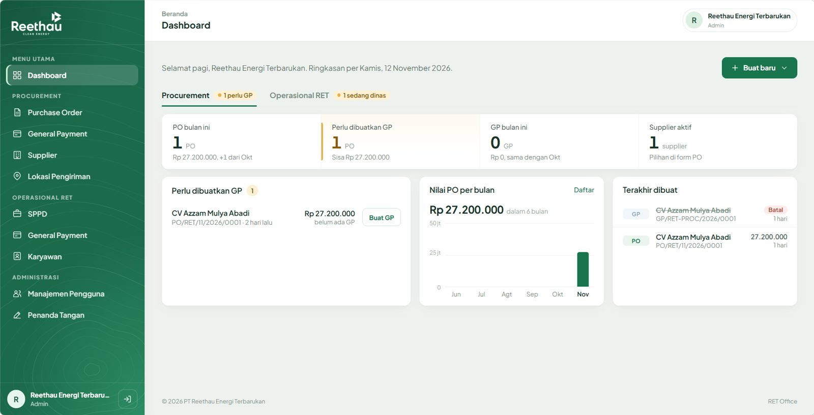
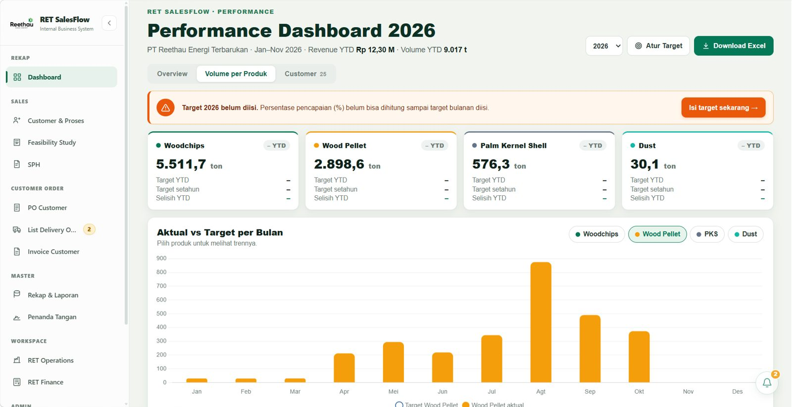
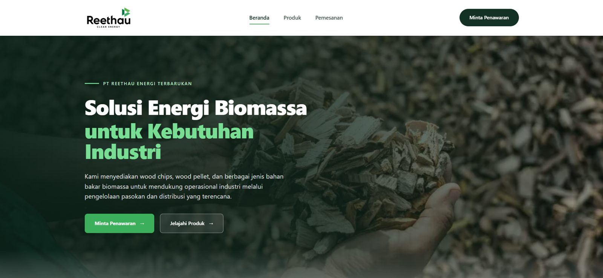
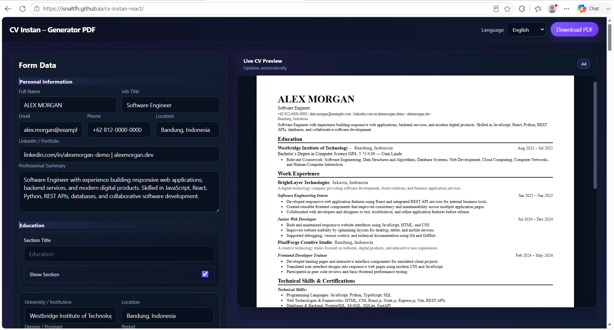

Software Engineering
Backend services and REST APIs with Python, FastAPI, PHP and Laravel — integrating databases, internal services and AI components into maintainable apps.
Software Engineer · Full-stack & AI
I build web applications, internal business systems and Generative AI / RAG tools — and deploy them on Linux. Informatics Engineering graduate (Cum Laude), now an IT Developer intern at Reethau Group.
About me
I'm an Informatics Engineering graduate from UIN Syarif Hidayatullah Jakarta (GPA 3.58/4.00, Cum Laude), currently an Information Technology Developer intern at Reethau Group. There, I build the web systems PT Reethau Energi Terbarukan runs on, from procurement and sales performance dashboards to a B2B order request website.
Before that, I completed two engagements at PT PLN Nusantara Power UP Muara Tawar: supporting daily IT operations for 50+ employees while contributing to an internal procurement app, then building and deploying an internal RAG chatbot over 20,573 pages of technical manuals as my final project.
Working across IT support, backend, frontend and AI taught me to build for the people who use a system every day. I'm open to roles in Software Engineering, Full-stack / Frontend Development, Generative AI / RAG, and IT Support.
Expertise
Backend services and REST APIs with Python, FastAPI, PHP and Laravel — integrating databases, internal services and AI components into maintainable apps.
Responsive interfaces with React.js, JavaScript, HTML and CSS — API integration, form processing, state handling and clear user feedback.
Hardware, software, OS and network troubleshooting — workstation deployment, user access, connectivity and technical documentation.
Internal apps on Linux VMs with Nginx and systemd — monitoring services and resolving API, networking, caching and deployment issues.
Technical skills
My works
Click Case study on any project to see the problem, what I built, and the result.

An internal assistant that answers questions from PLN technical manuals and shows which document each answer came from.
AI / RAG · Final Project · Apr – Jul 2026
Technical answers were spread across 74 PDF manuals totaling 20,573 pages, so finding the right procedure took a long time.
End-to-end: development, evaluation, optimization and deployment.
Internal company system — no public demo available.

Internal system that handles purchase orders, payments and suppliers, plus day-to-day operational requests.
Full-stack · Reethau Group · 2026
Procurement and operational paperwork for PT Reethau Energi Terbarukan needed one place to be created, tracked and approved.
Laravel, PHP, MySQL, JavaScript.
Internal company system — no public demo available.

Internal business system that follows every sale from first contact to invoice, with a yearly performance dashboard.
Full-stack · Reethau Group · 2026
Sales progress and delivery volumes per product were hard to follow and report across the year.
Laravel, PHP, MySQL, JavaScript.
Internal company system — no public demo available.

Company website where industrial buyers browse biomass products and request a quotation online.
Full-stack · Reethau Group · 2026
Client inquiries for biomass fuel needed a faster, structured way to reach the sales team.
Node.js, JavaScript, CSS.

Internal Laravel app for supplier, tender/project, CSMS and administrative workflows.
Backend · Internship · Aug – Nov 2025
An internal application supporting procurement operations at PT PLN Nusantara Power UP Muara Tawar.
Laravel, PHP, MySQL, Linux server.
Internal company system — no public demo available.

Students report campus facility issues; admins track them through analytical dashboards.
Full-stack · Campus project
Campus facility issues needed one place to be reported, monitored and evaluated.
PHP, React.js, JavaScript, CSS, MySQL.

Fill a form, watch the CV preview update live, and download a clean PDF.
Frontend · Personal project
Making a consistent, professional resume takes time and formatting effort.

Search any city and get current weather plus a short forecast, with visuals that follow the conditions.
Frontend · Personal project
A responsive weather app that shows current conditions and upcoming days for any searched city.

A responsive landing page for an AI workspace that helps teams search their knowledge.
Frontend · Personal project
Present an AI knowledge-workspace product clearly and guide visitors to sign up.
Coursework, experiments and side projects — including the source of this portfolio.
Professional journey
Reethau Group · Jakarta Selatan (on-site)
Spearheaded the development of 3+ integrated web applications to digitalize business operations and strengthen the corporate digital presence of PT Reethau Energi Terbarukan.
Built a responsive order validation platform with automated email dispatching to accelerate client inquiries.
Developed an informative company profile showcasing biomass production capacities and legal certifications (SVLK, ESKA, MEBI).
Engineered backend solutions to organize operational data and streamline daily business processes.
PT PLN Nusantara Power UP Muara Tawar
Developed, evaluated, and deployed an internal RAG application for technical-document retrieval.
PT PLN Nusantara Power UP Muara Tawar
Supported daily IT operations while contributing to internal application development and infrastructure troubleshooting.
Education
Bachelor of Informatics Engineering
Aug 2022 – Jul 2026
GDGOC UIN Jakarta
Coordinated mentors, schedules and weekly classes for 100+ participants.
Inter-campus event
Handled registration, logistics, digital publication and external communication.
GDGOC UIN Syarif Hidayatullah Jakarta
Chapter recognized as #1 Most Active and #1 Most Impactful in Indonesia.
Certifications
21 certificates — technical credentials, courses and community roles. Hover a row to pause, click a certificate to view it.
Technical certifications 8
Courses, language & internship 5
Community & leadership · GDGoC UIN Jakarta 8
Contact
Open to Software Engineering, Generative AI / RAG, Frontend and IT Support roles — on-site, hybrid or remote.